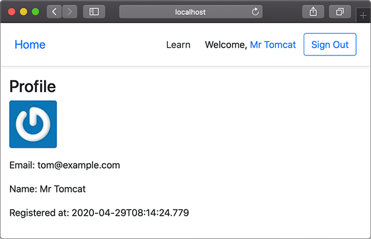

${user_name} @ ${created_at} ${delete_action}
${content}
${comment_replies}
${comment_action}
${comment_reply_form}
../git/BEFORE.md
我们已经介绍了Java Web的基础：Servlet容器，以及标准的Servlet组件：
此外，Servlet容器为每个Web应用程序自动创建一个唯一的ServletContext实例，这个实例就代表了Web应用程序本身。
在MVC高级开发中，我们手撸了一个MVC框架，接口和Spring MVC类似。如果直接使用Spring MVC，我们写出来的代码类似：
@Controller
public class UserController {
@GetMapping("/register")
public ModelAndView register() {
...
}
@PostMapping("/signin")
public ModelAndView signin(@RequestParam("email") String email, @RequestParam("password") String password) {
...
}
...
}
但是，Spring提供的是一个IoC容器，所有的Bean，包括Controller，都在Spring IoC容器中被初始化，而Servlet容器由JavaEE服务器提供（如Tomcat），Servlet容器对Spring一无所知，他们之间到底依靠什么进行联系，又是以何种顺序初始化的？
在理解上述问题之前，我们先把基于Spring MVC开发的项目结构搭建起来。首先创建基于Web的Maven工程，引入如下依赖：
以及provided依赖：
这个标准的Maven Web工程目录结构如下：
spring-web-mvc
├── pom.xml
└── src
└── main
├── java
│ └── com
│ └── itranswarp
│ └── learnjava
│ ├── AppConfig.java
│ ├── DatabaseInitializer.java
│ ├── entity
│ │ └── User.java
│ ├── service
│ │ └── UserService.java
│ └── web
│ └── UserController.java
├── resources
│ ├── jdbc.properties
│ └── logback.xml
└── webapp
├── WEB-INF
│ ├── templates
│ │ ├── _base.html
│ │ ├── index.html
│ │ ├── profile.html
│ │ ├── register.html
│ │ └── signin.html
│ └── web.xml
└── static
├── css
│ └── bootstrap.css
└── js
└── jquery.js
其中，src/main/webapp是标准web目录，WEB-INF存放web.xml，编译的class，第三方jar，以及不允许浏览器直接访问的View模版，static目录存放所有静态文件。
在src/main/resources目录中存放的是Java程序读取的classpath资源文件，除了JDBC的配置文件jdbc.properties外，我们又新增了一个logback.xml，这是Logback的默认查找的配置文件：
<?xml version="1.0" encoding="UTF-8"?>
<configuration>
<appender name="STDOUT"
class="ch.qos.logback.core.ConsoleAppender">
<layout class="ch.qos.logback.classic.PatternLayout">
<Pattern>%d{yyyy-MM-dd HH:mm:ss} %-5level %logger{36} - %msg%n</Pattern>
</layout>
</appender>
<logger name="com.itranswarp.learnjava" level="info" additivity="false">
<appender-ref ref="STDOUT" />
</logger>
<root level="info">
<appender-ref ref="STDOUT" />
</root>
</configuration>
上面给出了一个写入到标准输出的Logback配置，可以基于上述配置添加写入到文件的配置。
在src/main/java中就是我们编写的Java代码了。
和普通Spring配置一样，我们编写正常的AppConfig后，只需加上@EnableWebMvc注解，就“激活”了Spring MVC：
@Configuration
@ComponentScan
@EnableWebMvc // 启用Spring MVC
@EnableTransactionManagement
@PropertySource("classpath:/jdbc.properties")
public class AppConfig {
...
}
除了创建DataSource、JdbcTemplate、PlatformTransactionManager外，AppConfig需要额外创建几个用于Spring MVC的Bean：
@Bean
WebMvcConfigurer createWebMvcConfigurer() {
return new WebMvcConfigurer() {
@Override
public void addResourceHandlers(ResourceHandlerRegistry registry) {
registry.addResourceHandler("/static/**").addResourceLocations("/static/");
}
};
}
WebMvcConfigurer并不是必须的，但我们在这里创建一个默认的WebMvcConfigurer，只覆写addResourceHandlers()，目的是让Spring MVC自动处理静态文件，并且映射路径为/static/**。
另一个必须要创建的Bean是ViewResolver，因为Spring MVC允许集成任何模板引擎，使用哪个模板引擎，就实例化一个对应的ViewResolver：
@Bean
ViewResolver createViewResolver(@Autowired ServletContext servletContext) {
var engine = new PebbleEngine.Builder().autoEscaping(true)
// cache:
.cacheActive(false)
// loader:
.loader(new Servlet5Loader(servletContext))
.build();
var viewResolver = new PebbleViewResolver(engine);
viewResolver.setPrefix("/WEB-INF/templates/");
viewResolver.setSuffix("");
return viewResolver;
}
ViewResolver通过指定prefix和suffix来确定如何查找View。上述配置使用Pebble引擎，指定模板文件存放在/WEB-INF/templates/目录下。
剩下的Bean都是普通的@Component，但Controller必须标记为@Controller，例如：
// Controller使用@Controller标记而不是@Component:
@Controller
public class UserController {
// 正常使用@Autowired注入:
@Autowired
UserService userService;
// 处理一个URL映射:
@GetMapping("/")
public ModelAndView index() {
...
}
...
}
如果是普通的Java应用程序，我们通过main()方法可以很简单地创建一个Spring容器的实例：
public static void main(String[] args) {
var context = new AnnotationConfigApplicationContext(AppConfig.class);
}
但是问题来了，现在是Web应用程序，而Web应用程序总是由Servlet容器创建，那么，Spring容器应该由谁创建？在什么时候创建？Spring容器中的Controller又是如何通过Servlet调用的？
在Web应用中启动Spring容器有很多种方法，可以通过Listener启动，也可以通过Servlet启动，可以使用XML配置，也可以使用注解配置。这里，我们只介绍一种最简单的启动Spring容器的方式。
第一步，我们在web.xml中配置Spring MVC提供的DispatcherServlet：
<?xml version="1.0"?>
<web-app>
<servlet>
<servlet-name>dispatcher</servlet-name>
<servlet-class>org.springframework.web.servlet.DispatcherServlet</servlet-class>
<init-param>
<param-name>contextClass</param-name>
<param-value>org.springframework.web.context.support.AnnotationConfigWebApplicationContext</param-value>
</init-param>
<init-param>
<param-name>contextConfigLocation</param-name>
<param-value>com.itranswarp.learnjava.AppConfig</param-value>
</init-param>
<load-on-startup>0</load-on-startup>
</servlet>
<servlet-mapping>
<servlet-name>dispatcher</servlet-name>
<url-pattern>/*</url-pattern>
</servlet-mapping>
</web-app>
初始化参数contextClass指定使用注解配置的AnnotationConfigWebApplicationContext，配置文件的位置参数contextConfigLocation指向AppConfig的完整类名，最后，把这个Servlet映射到/*，即处理所有URL。
上述配置可以看作一个样板配置，有了这个配置，Servlet容器会首先初始化Spring MVC的DispatcherServlet，在DispatcherServlet启动时，它根据配置AppConfig创建了一个类型是WebApplicationContext的IoC容器，完成所有Bean的初始化，并将容器绑到ServletContext上。
因为DispatcherServlet持有IoC容器，能从IoC容器中获取所有@Controller的Bean，因此，DispatcherServlet接收到所有HTTP请求后，根据Controller方法配置的路径，就可以正确地把请求转发到指定方法，并根据返回的ModelAndView决定如何渲染页面。
最后，我们在AppConfig中通过main()方法启动嵌入式Tomcat：
public static void main(String[] args) throws Exception {
Tomcat tomcat = new Tomcat();
tomcat.setPort(Integer.getInteger("port", 8080));
tomcat.getConnector();
Context ctx = tomcat.addWebapp("", new File("src/main/webapp").getAbsolutePath());
WebResourceRoot resources = new StandardRoot(ctx);
resources.addPreResources(
new DirResourceSet(resources, "/WEB-INF/classes", new File("target/classes").getAbsolutePath(), "/"));
ctx.setResources(resources);
tomcat.start();
tomcat.getServer().await();
}
上述Web应用程序就是我们使用Spring MVC时的一个最小启动功能集。由于使用了JDBC和数据库，用户的注册、登录信息会被持久化：

有了Web应用程序的最基本的结构，我们的重点就可以放在如何编写Controller上。Spring MVC对Controller没有固定的要求，也不需要实现特定的接口。以UserController为例，编写Controller只需要遵循以下要点：
总是标记@Controller而不是@Component：
@Controller
public class UserController {
...
}
一个方法对应一个HTTP请求路径，用@GetMapping或@PostMapping表示GET或POST请求：
@PostMapping("/signin")
public ModelAndView doSignin(
@RequestParam("email") String email,
@RequestParam("password") String password,
HttpSession session) {
...
}
需要接收的HTTP参数以@RequestParam()标注，可以设置默认值。如果方法参数需要传入HttpServletRequest、HttpServletResponse或者HttpSession，直接添加这个类型的参数即可，Spring MVC会自动按类型传入。
返回的ModelAndView通常包含View的路径和一个Map作为Model，但也可以没有Model，例如：
return new ModelAndView("signin.html"); // 仅View，没有Model
返回重定向时既可以写new ModelAndView("redirect:/signin")，也可以直接返回String：
public String index() {
if (...) {
return "redirect:/signin";
} else {
return "redirect:/profile";
}
}
如果在方法内部直接操作HttpServletResponse发送响应，返回null表示无需进一步处理：
public ModelAndView download(HttpServletResponse response) {
byte[] data = ...
response.setContentType("application/octet-stream");
OutputStream output = response.getOutputStream();
output.write(data);
output.flush();
return null;
}
对URL进行分组，每组对应一个Controller是一种很好的组织形式，并可以在Controller的class定义出添加URL前缀，例如：
@Controller
@RequestMapping("/user")
public class UserController {
// 注意实际URL映射是/user/profile
@GetMapping("/profile")
public ModelAndView profile() {
...
}
// 注意实际URL映射是/user/changePassword
@GetMapping("/changePassword")
public ModelAndView changePassword() {
...
}
}
实际方法的URL映射总是前缀+路径，这种形式还可以有效避免不小心导致的重复的URL映射。
可见，Spring MVC允许我们编写既简单又灵活的Controller实现。
使用Spring MVC，在注册、登录等功能的基础上增加一个修改口令的页面。
使用Spring MVC时，整个Web应用程序按如下顺序启动：
web.xml并初始化DispatcherServlet；DispatcherServlet创建IoC容器并自动注册到ServletContext中。启动后，浏览器发出的HTTP请求全部由DispatcherServlet接收，并根据配置转发到指定Controller的指定方法处理。